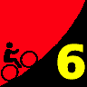
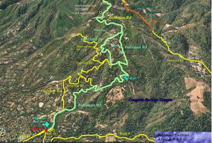

|  |
2009 Low-Key Hillclimbs Week 6: Bohlman-Norton-Kittridge-Quickert-On Orbit-Bohlman 07 Nov 2009 |
|  |
| Aerial photo of Bohlman-Norton-Kittridge-Quickert-On Orbit-Bohlman, courtesy of Stanford Cycling |
Bohlman Returns.... with a twist.
Low-Key has climbed Bohlman-On Orbit-Bohlman on 5 separate occasions in its 7 years of existance. We passed it up last year to open up the schedule a bit, so now the hunger is even stronger than usual. Yet this year we try something new. After leaving the cemetery we turn left onto Norton Road, then right onto Kittridge, then left onto Quickert. This takes us to On Orbit, where we turn left for that oh-so-familiar entry into hell....
The route is new, but the pain is very much the same. Bohlman... Bohlman.... It calls.
Our insurance demands it: helmets are required. Sorry kids, no exceptions!
USA Cycling rules do not allow ear plugs. We don't think it's a good idea either. So for safety sake, please leave both ears open during all Low-Key events!
Trailers pulling boom boxes are fine, however.
NEW: We'll meet at Saratoga Elementary School near Oak and Fourth in Saragoga. Here's a map. At 10:10, we'll ride together to the cemetary at the intersection of 6th and Bohlman (see map). Then after regrouping, and indulging ourselves with a considerable dose of denial at the pain which follows, we'll head up the hill.
Google maps, as is the case with Old La Honda Road, is confused about Bohlman. For details, check out Yahoo Maps. This year, for the first time, we make the left turn onto Norton Road, then continue onto Quickert, then a further left onto Kittridge, when this T's into On Orbit, we turn left there. When in doubt, go up! Look carefully at the profile on the right. There simply ain't no relief until the top of On Orbit.
We'll have a marshal at potentially dangerous turns, and arrows marked on the road in red chalk at all turns.
On Orbit climbs memorably to a short descent. At the bottom, there's a T intersection, where we'll take the left onto Bohlman. We'll have another marshal here.
Key to remember is Low-Key is traffic, so if there's cars approaching the T intersection, their task is to stop the bicycles, not the cars, which have right of way. Take my word for it, you'll appreciate an excuse for a few seconds of recovery!
| stats | 4.44 miles, 2110 feet, 9.0% |
| format | mass start |
| time | reg 9:15 - 10:00 start 10:10am |
| coordinator | |
| aerial view | Stanford Cycling (lower) Stanford Cycling (upper) |
| route profile | Motionbased profile |
| weather | Weather Underground Weather Bonk |
| registration form |
PDF release form |
| entry fee | $10 voluntary donation free for juniors 2 free for volunteers free for coordinators |
{kind=link}
{kind=link}
{kind=link}